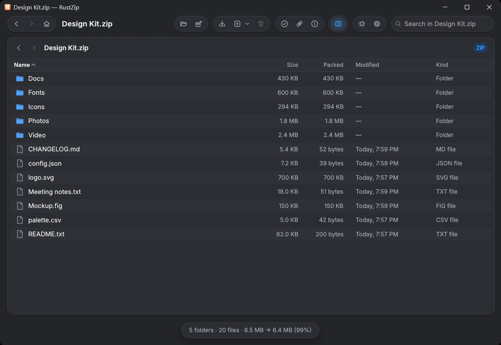
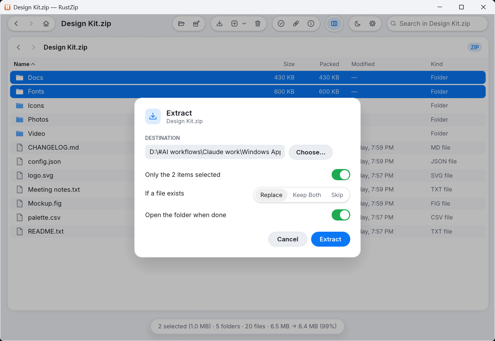
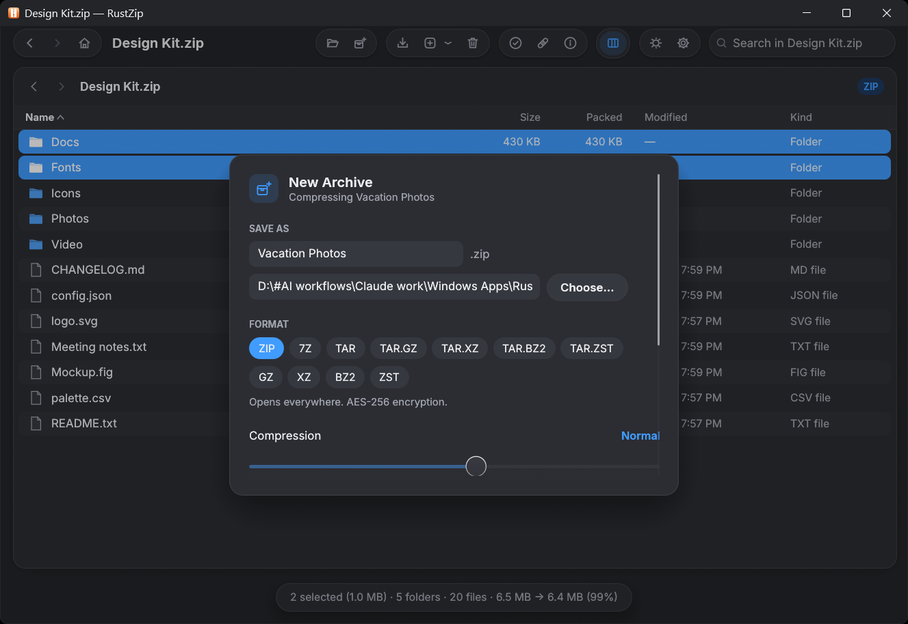

A fast archive manager with a clean look.
Open, create, extract, test and repair ZIP, 7Z, RAR, TAR, GZ, XZ and ZST. One small program with no extra tools.
Windows, macOS and Linux · Installs for your user, no admin rights

Step into archives like folders and search inside them. Double-click to open a file.

Light or dark, with your choice of accent colour. Pick a window style too.

Jobs run in the background. Speed, time left and Cancel.

Choose a format and compression level. Then add files.

Rearrange the toolbar. Set RustZip as your default archive app.